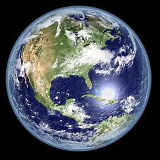

EARTH
« Previous
Next »

What is Earth?
- All About Earth Our home planet Earth is a rocky, terrestrial planet.
- It has a solid and active surface with mountains, valleys, canyons, plains and so much more. Earth is special because it is an ocean planet.
- As far as we know, our world is unique in the universe, defined by three elements, Air, Land and Water. Each element has its own special properties and phenomena and is home to myriad lifeforms that have infiltrated every habitat, from the deepest oceans to the tiniest nooks and crannies.
Structure and Surface:
- Earth is a terrestrial planet. It is small and rocky.
- Earth's atmosphere is the right thickness to keep the planet warm so living things like us can be there. It’s the only planet in our solar system we know of that supports life. It is mostly nitrogen, and it has plenty of oxygen for us to breathe.
Time and Neighbours:
- A day on Earth lasts a little under 24 hours.
- One year on Earth lasts 365.25 days. That 0.25 extra means every four years we need to add one day to our calendar. We call it a leap day (in a leap year).
- Earth has just one Moon. It is the only planet to have just one moon.
Earth has lots of spacecraft watching it. There is still a lot we can learn about our home planet.
Earth is the third planet from the Sun in our solar system. That means Venus and Mars are Earth’s neighboring planets.
Some intresting things about Earth:
The days are getting longer
The length of Earth's day is increasing. When Earth was formed 4.6 billion years ago, its day would have been roughly six hours long. By 620 million years ago, this had increased to 21.9 hours. Today, the average day is 24 hours long, but is increasing by about 1.7 milliseconds every century. its because The moon is slowing down Earth's rotation through the tides that it helps create. Earth's spin causes the position of its tidal ocean bulges to be pulled slightly ahead of the moon-Earth axis, which creates a twisting force that slows down Earth's rotation. As a result, our day is getting longerEarth gravity isn't uniform
If Earth were a perfect sphere, its gravitational field would be the same everywhere. But in reality, the planet's surface is bumpy, and water flow, ice drift and the movement of the tectonic plates beneath Earth's crust all change the pull of gravity. These variations are known as gravity anomalies. A mountain range such as the Himalayas causes a positive gravity anomaly — gravity is stronger there than it would be on a featureless perfectly smooth planet. Conversely, the presence of ocean trenches, or dips in the land caused by glaciers millennia ago, leads to negative gravity anomalies
The driest place in the world- the Atacama Desert in northern Chile — is next to the biggest body of water — the Pacific Ocean. Average annual rainfall in Arica, Chile, is just 0.8 millimeters (0.03 inches). It is believed that Atacama's Calama city saw no rain for 400 years until a sudden storm fell in 1972. Unlike most deserts, the Atacama is relatively cold and, in its most arid parts, does not even host cyanobacteria — green photosynthetic microorganisms that live in rocks or under stones.